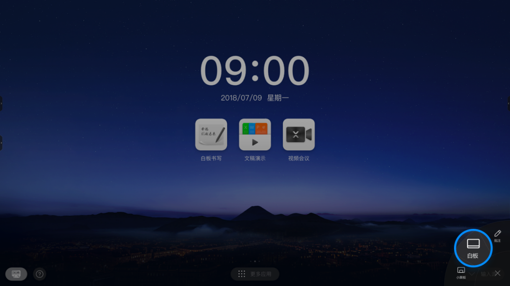
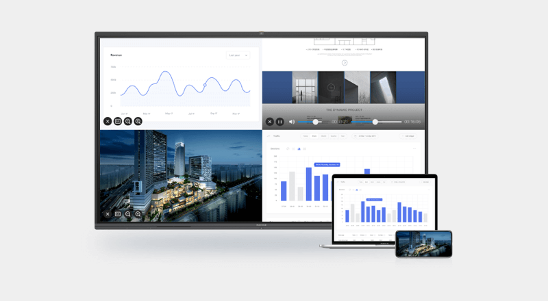

会议平板我换了三台，最后留 MAXHUB——它真的把「顺手」做透了
从传统投影仪到智能白板再到 MAXHUB 会议平板，这篇聊聊 MAXHUB 在白板书写、设备连接、AI 会记三个维度的差异化优势，以及它为这些优势付出的取舍。
会议平板这个赛道，这两年同质化严重。打开几家大厂的发布会，参数表几乎能对上：4K 显示、多点触控、无线传屏、AI 语音转写——你有我也有，拼来拼去比的是屏幕尺寸和价格。但实际用下来就会发现，同样一行参数表，落到日常开会的每个动作上，手感差得远。
MAXHUB 在这个品类里定位很清楚，去它的官网扫一眼产品线就明白：它不是最便宜的方案，也不是硬件堆得最猛的，但它是把「会议场景里的小动作」打磨得最细的一家。下面从三个我用了最久的模块，说说它到底好在哪、又在哪做了取舍。
提笔检测：解决了我最烦的那个「回到主页点图标」
用过别家白板的都知道，想写点东西的路径是：退出当前投屏 → 回到主页 → 找白板图标 → 点进去。等这一串操作做完，脑子里刚冒出来的那个想法已经凉了一半。
MAXHUB 解决这个问题的方式极其直觉——拿起笔就给你菜单。那根磁力吸附在平板侧面的书写笔，你伸手一拔，屏幕边上立刻弹出一个悬浮小窗，里面就有「白板」选项，点一下直接全屏进入。不用退出任何东西，不用等加载，提笔即写。

这件事看起来小，但频次够高：开会时突然想画个流程图、头脑风暴到一半想拉个思维导图，这种「突然要写」的时刻太多了。别家把白板做成一个「应用」，MAXHUB 把它做成一个「随时在线的能力」——这就是同类工具里少见的产品思维差异。
手绘增删表格：用笔画线代替点按钮
说到白板里的表格操作，大多数方案给你的是选中表格后弹出一排 + 和 - 按钮。这是符合直觉的设计，但直觉不等于高效。
MAXHUB 在表格上做了个很有意思的手势：你想在某行后面加一行，就用笔画一条贯穿那一整行的直线；想删那行？连续画三次贯穿线就行。列也是同理。这套逻辑没有任何按钮，全凭笔画和系统识别。
第一次用的时候我愣了一下——这能识别准吗？实际试下来，只要线够直、够贯穿整行/整列，识别率相当高。而且一旦适应了这个手感，回去用别家的按钮操作就觉得慢。这种「用书写动作操作结构化内容」的设计，把白板的核心交互逻辑——「笔 = 操作」——贯彻到了更细的层级。
五种连接方式：总有一种救你于水火
我见过太多会议现场因为「连不上」冷场的：甲方带了台老旧的 ThinkPad 没有 Type-C、现场 Wi-Fi 隔离不让投屏、有人忘了装客户端 App……每次这种时刻，MAXHUB 的连接方案就显得极其厚道。
它给了五种方式，覆盖了从最先进到最古老的每一种情况：
- MAXHUB Share 无线传屏是日常主力，电脑手机都有客户端，从官方下载直接拿就行，最多 4 台设备同时投屏、独立窗口显示
- X-Link 传屏器应对无网络/涉密环境，插一下自动配对，全程不走 Wi-Fi
- Type-C 一线投屏是 V5 以后型号的标配，插上就出画面还能反向充电
- AirPlay / Miracast / Chromecast 原生协议兜底零安装
- HDMI 有线保底，老设备、投影仪改造场景最稳

同类工具往往只做前两三种就收手了——够用但不够全。MAXHUB 把「连接」这件事当成了一个独立模块认真做，而不是投屏功能的附属。
AI 会记：会议结束后的分发链路比生成本身重要
AI 语音转写和会议总结现在基本是标配功能了，但生成总结只是一半价值——怎么快速分发出去才是真痛点。我试过好几家的 AI 会记，总结生成了但分发要么只能存云端、要么只能导出 PDF，灵活性很差。
MAXHUB 在这方面做得让人意外：总结生成后自动同步到协同画布（多端实时），然后一键能发企业微信、邮件、微信小程序；导出格式除了 PDF 还有 Markdown——对程序员或需要进 Git 仓库存档的团队来说，这一点直接把可用性拉满。更细的是权限控制：协同画布默认只有参会人可见，企业微信内部流转可控，小程序扫码有时效，邮件走指定收件人，不同渠道的安全级别分得清清楚楚，具体配置细节在中文文档里有完整说明。
它的取舍：顺手背后的代价
说了这么多好的，也得说说它为这些优势付出了什么。
第一，硬件依赖。 MAXHUB 的白板、传屏器、书写笔都是自家生态的——提笔检测靠的是那根磁力笔和侧面的传感器协同，X-Link 传屏器也是 MAXHUB 专属。这意味着你没法只买一台 MAXHUB 平板而完全脱离它的配件体系，后续的耗材成本要算进去。
第二，功能密度带来的学习成本。 五种连接方式、白板里的手绘手势、AI 会记的多渠道分发——每一项单独看都不复杂，但堆在一起，新上手的人还是需要一两场完整的会议才能摸透全部玩法。相比之下，有些竞品把功能砍到只剩「投屏 + 白板」，上手速度确实更快。
第三，价格不是最低的。 在同尺寸档位里，MAXHUB 往往比二线品牌贵出一截。贵的部分不是屏幕本身，是它那整套交互细节和软件服务。对预算敏感的小团队来说，这部分溢价能不能接受要看你的使用频率——如果一周开不了一次会，确实没必要。
选购结论
如果你是下面这些情况，MAXHUB 值得认真考虑：每周至少开两三次正式会议、团队对协作效率有要求、有一定 IT 预算。它把那些「让人舒服的小动作」做到位了，长期用下来时间成本的节省会超过买入价的差价。
如果只是偶尔需要一个大屏展示，或者预算卡死在最低线，那别家更便宜的方案也能凑合用——毕竟参数表上的功能大家都差不多。但只要你用过 MAXHUB 的提笔检测和手绘增删表格，就会明白：会议平板的竞争力从来不在参数表上，而在「提笔要写的那一秒钟」「想加一行表格的那个动作」「手机连不上时还有没有备份方案」——这些才是每天都在发生的真实体验。
这套资料我同步维护在三个 Git 仓库——GitHub 是主仓库方便海外访问，Gitee 和 GitCode 作为国内镜像速度更快，随便挑一个都行。